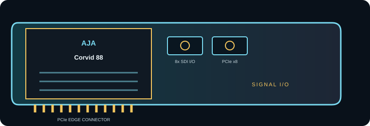

[ INDIVIDUAL COMPONENT // EXPANSION CARDS ]
AJA Corvid 88
Eight-channel SDI PCIe I/O card for multi-channel HD/SD capture and playback systems. This is a model-specific reference; verify the board revision and full specifications against the official sources before installation.

IDENTIFICATION: Match the silkscreen/model marking, part number, board revision and bracket to manufacturer documentation. Port direction, supported formats and driver behavior can vary by model revision and software release.
Capture, playback and compatibility specifications
| Exact model | Corvid 88 |
|---|---|
| Bus / host interface | PCI Express x8 host interface; use an x8-wired slot or wider compatible slot. Check the workstation’s lane sharing and the card revision against AJA’s current documentation. |
| Capture / playback interface | Eight SDI I/O channels for SD/HD workflows; configure signal direction and channel mapping in the supported driver/application. |
| Resolution and frame-rate envelope | SD and HD SDI through 3G-SDI class formats, including 1080p up to 60 frames/s where the exact signal mapping is supported. It is an HD/SD multi-channel board, not a four-port 12G 4K card. |
| Pixel format and codec handling | Video is delivered as frames to supported AJA software/SDK. The card itself is not a file codec/encoder; uncompressed capture and any ProRes/DNx or other file codec are determined by host application and storage throughput. |
| Host compatibility | OEM and application integration requires AJA Desktop Software/SDK and a supported operating-system version; AJA Control Room/Control Panel support changes with release. Validate the exact OS/driver before preserving an older Corvid-based system. |
| Limitations and installation checks | Do not infer 4K/12G support from the eight connectors: this model is aimed at SD/HD channel density. Eight simultaneous streams require sustained PCIe, memory and disk bandwidth; signal reference, routing and app channel support must be planned. |
Integration notes and limitations
- Measure available PCIe lanes and sustained host/storage bandwidth; mechanical slot length alone does not guarantee the electrical link width needed by the card.
- Confirm that source timing, signal standard, cable, reference, pixel format, channel mapping and software configuration agree before recording or playback.
- Record driver/firmware versions, operating system, application, breakout/accessory part numbers and tested mode. Update only with a recovery plan for mission-critical rigs.
- Do not infer 4K/12G support from the eight connectors: this model is aimed at SD/HD channel density. Eight simultaneous streams require sustained PCIe, memory and disk bandwidth; signal reference, routing and app channel support must be planned.
For codec planning, distinguish a video transport/interface and raw pixel format from a compressed media-file codec. A supported capture application may encode a file format that the card itself does not encode.
Manufacturer sources and support
- AJA — Corvid 88 manufacturer technical/product informationProduct-line technical reference; consult the exact model format and interface table for the required mode.
- AJA — AJA Corvid 88 support and downloadsOfficial support, driver or release-note resource; operating-system and software compatibility can change by release.
Manufacturer documentation for the precise hardware revision takes precedence over generic workflow or family-level guidance.